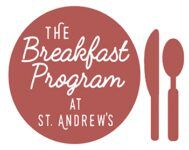
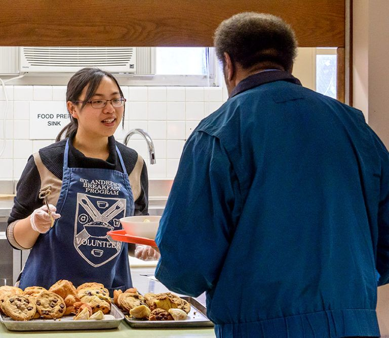
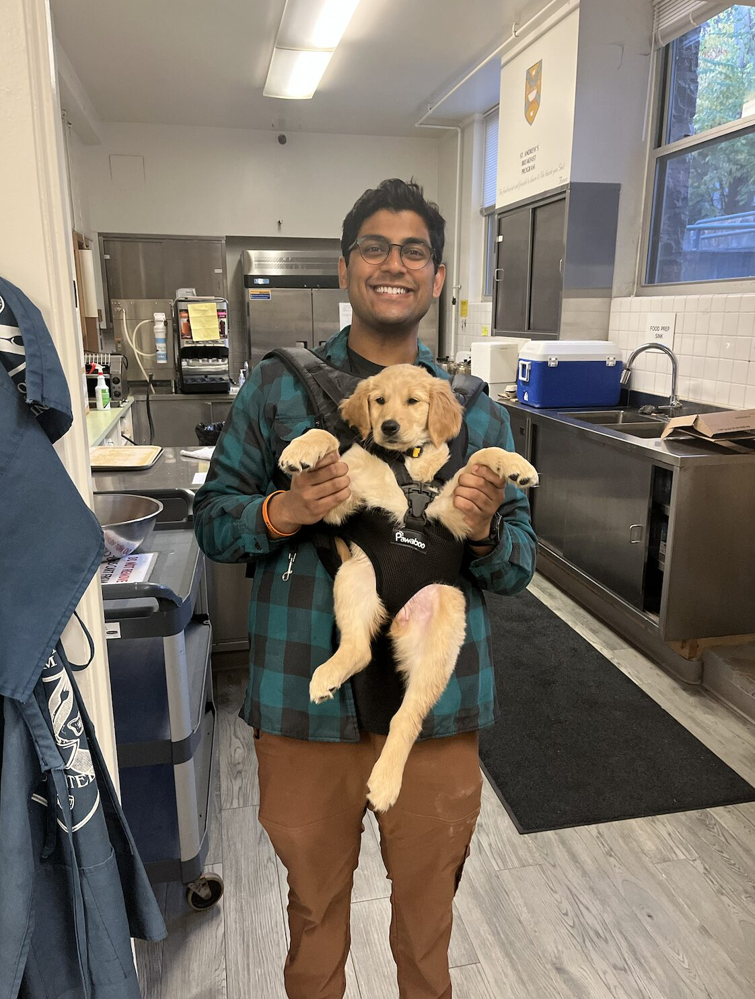

Saint Andrew's Breakfast Program
Food Server · Ann Arbor, MI · 2021 – 2024
What is the Saint Andrew's Breakfast Program
In the heart of Ann Arbor, MI, the Breakfast Program at Saint Andrew's is more than just a place to grab a bite. From 2021 to 2024, I had the honor of serving as a Food Server at this initiative. Recognizing the power of nutrition as a cornerstone of preventative medicine, we not only provide our city's underserved community with wholesome breakfasts but also offer clothing and prepared nutritional bagged lunches. Our goal goes beyond merely feeding: we aim to foster well-being, empowerment, and hope through each meal and interaction. At Saint Andrew's, we believe that when you feed the body with care, you nourish the soul and empower the spirit.
St. Andrew's Breakfast Program Video
Some Pictures from The Breakfast Program


Drag to spin · click a photo to enlarge